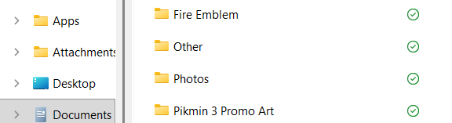
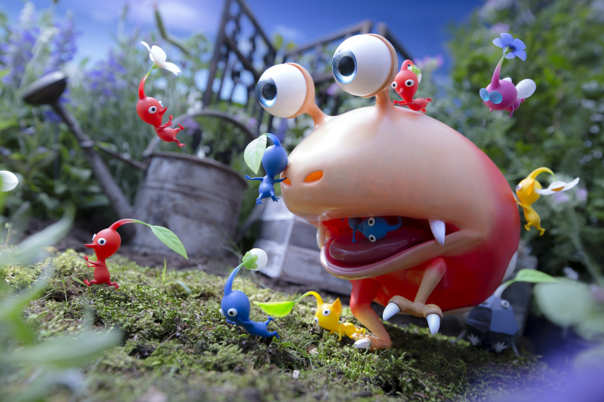

What is Bloom Album?
Bloom Album is a custom online photo album made to make customizing and organizing photos easier! It serves a personal online gallery, photo album, or an potentially inspiration for collages! It allows for descriptions with folders, custom thumbnails for folders, and tags on photos and albums. Bloom Album only accepts .png, .jpg, and .gif files at the moment. I hope you enjoy it.
Why was Bloom Album Created?
The idea for Bloom Album came about while I was cleaning my computer of files. As I was sorting, I realized I had a lot of photos, artworks, and pictures I wanted to saved. Then I thought it would be cool if I had a place to display this all. I was inspired by the beautiful Pikmin 3 Promo Art, and thought an album of it, combined with a custom thumbnail would look cool. Coincidentally the Rose theme that inspired Bloom Album fits with the Pikmin inspiration!

